철도토목산업기사 (2005-05-29 기출문제)
1과목: 철도공학
1. 도상재료의 구비조건으로 보기 어려운 것은?
- 충격에 강할 것
- 능각(稜角)이 풍부할 것
- 입자간의 마찰력이 작을 것
- 입도가 적정할 것
(정답률: 알수없음)

2. 장대레일에 좌굴이 발생하였을 경우의 응급 조치 방법으로 적당하지 않은 것은?
- 그대로 밀어 원상으로 한다.
- 적당한 곡선을 삽입한다.
- 레일을 절단하여 응급 조치한다.
- 물을 뿌려주고 다지기 작업을 한다.
(정답률: 알수없음)
3. 장대레일의 부설조건이 아닌 것은?
- 일반적으로 반경 300m 미만의 곡선에는 부설치 않는다.
- 반경 1500m 미만의 반향곡선에는 1개의 장대레일로 연속해서 설치하여야 한다.
- 구배변환점에는 반경 3000m 이상의 종곡선을 삽입하여야 한다.
- 일반적으로 전장 25m 이상의 교량은 피하여야 한다.
(정답률: 알수없음)
4. 교통시스템의 하나인 HSST(High Speed Surface Transport)의 특징에 대한 설명으로 옳지 않은 것은?
- 공해가 없다.
- 고도의 안전성이 있다.
- 우수한 경제성이 있다.
- 타교통기관과 상호승환이 용이하다.
(정답률: 알수없음)
5. 단면은 약 64cm2, 인장강도 8000kg/cm2인 50kg N 레일 1개가 받을 수 있는 인장력은?
- 80 ton
- 60 ton
- 512 ton
- 700 ton
(정답률: 알수없음)
6. 궤도보수검사에 대한 설명 중 옳지 않은 것은?
- 궤간은 확대틀림량을 (+), 축소틀림량을 (-)로 한다.
- 수평은 직선부는 좌측레일, 곡선부는 내측레일을 기준으로 하여 상대편 레일이 높은 것은 (+), 낮은 것은 (-)로 한다.
- 면맞춤은 직선부는 좌측레일, 곡선부는 내측레일을 기준으로 측정하며, 높이 솟은 틀림량을 (+), 낮게 처진 틀림량을 (-)로 한다.
- 줄맞춤은 직선부는 좌측레일, 곡선부는 내측레일을 기준으로 측정하며, 궤간내방으로 틀림량을 (+), 궤간 외방으로 틀림량을 (-)로 한다.
(정답률: 알수없음)
7. 화차조차장의 위치로서 가장 적합하지 않은 곳은?
- 화차가 대량집산되는 대도시주변
- 공업단지부근
- 철도선로의 분기점
- 장거리 간선의 시종점부근
(정답률: 알수없음)
8. 장대레일이라 함은 레일 1개의 길이가 몇 m 이상을 의미하는가?
- 50m
- 150m
- 200m
- 250m
(정답률: 알수없음)
9. 이음매 부속품 중 와셔의 역할로서 옳지 않은 것은?
- 적정한 볼트의 장력을 준다.
- 이음매 볼트와 이음매 판 사이의 완충역할을 한다.
- 너트장력의 불균형을 방지한다.
- 볼트 재료의 화학적 성질을 보완해 준다.
(정답률: 알수없음)
10. 속도향상을 위한 선로의 대책 중 평면선형에 대한 대책으로 맞지 않는 것은?
- 곡선반경을 될 수 있는 한 크게 한다.
- 캔트를 될 수 있는 한 크게 한다.
- 캔트 부족량을 될 수 있는 한 크게 한다.
- 곡률 변화구간과 캔트 변화구간이 일치하는 것이 바람직하다.
(정답률: 알수없음)
11. 2급선 철도의 본선에 있어서 완화곡선은 최대반경 몇 m 이하의 곡선과 직선이 접속하는 곳에 부설하는가?
- 5000m
- 3000m
- 2000m
- 1000m
(정답률: 알수없음)
12. 단선구간에서 역간 평균 운전시분이 5분, 열차 취급시분이 1분, 선로이용율이 60%일 때 선로용량은?
- 144회
- 288회
- 432회
- 864회
(정답률: 알수없음)
13. 건널목은 안전설비 및 관리원 근무에 따라 종별을 구분하고 있다. 다음 중 건널목의 종별로 틀린 것은?
- 1종 건널목
- 2종 건널목
- 3종 건널목
- 4종 건널목
(정답률: 알수없음)
14. 일반적으로 도상을 불량, 양호, 우량노반으로 구분할 때 양호 노반의 기준이 되는 도상계수 값은?
- 2 ㎏/cm3
- 4 ㎏/cm3
- 9 ㎏/cm3
- 15 ㎏/cm3
(정답률: 알수없음)
15. 선로의 노반이 50m에 걸쳐 침하되어 서행신호기를 건식하였을 때 열차가 지정 서행속도 이하로 운전하여야 할 거리는? (단, 통과열차의 열차길이는 200m로 함.)
- 50m
- 150m
- 350m
- 450m
(정답률: 알수없음)
16. 열차가 평탄하고 직선인 선로에서 정지상태에서 움직이는데 처음 발생하는 저항은?
- 출발저항
- 주행저항
- 가속도저항
- 곡선저항
(정답률: 알수없음)
17. 보선작업의 기계화를 추진하기 위하여 배려해야 할 사항에 해당되지 않는 것은?
- 열차운행의 고밀화, 영업시간의 증가
- 보수시간의 확보
- 보수기지, 보수통로의 정비
- 기계 검사 수리체제의 정비
(정답률: 알수없음)
18. 다음 중 궤도의 평면성 틀림에 대한 설명으로 옳은 것은?
- 곡선부 내측레일을 기준으로 한 수평 틀림
- 기준레일의 줄 및 면틀림이 중복된 틀림
- 궤도의 10m 간격에 있어서 길이 방향에 대한 높이차
- 궤도의 5m 간격에 있어서 수평 틀림의 변화량
(정답률: 알수없음)
19. 선로용량 사정(査定)시 한계용량에 선로이용율을 곱하여 구하는 것은?
- 실제용량
- 실용용량
- 경제용량
- 사실용량
(정답률: 알수없음)
20. 콘크리트 도상에 관한 설명 중 단점으로 옳은 것은?
- 배수가 양호하고 동상이 없다.
- 궤도의 탄성이 적으므로 충격과 소음이 크다.
- 도상의 진동과 차량의 동요가 적다.
- 궤도의 세척과 청소가 용이하다.
(정답률: 알수없음)
2과목: 측량학
21. 하천 양안의 고저차를 측정하기 위하여 교호수준측량을 행하는 이유로 가장 옳은 것은?
- 지상의 변화에 의한 오차나 기계오차를 제거하기 위하여
- 기구의 곡률오차를 없애기 위하여
- 과실에 의한 오차를 없애기 위하여
- 개인오차를 없애기 위하여
(정답률: 알수없음)
22. 다음의 완화곡선에 대한 설명중 옳지 않은 것은?
- 완화곡선의 접선은 시점에서 원호에, 종점에서 직선에 접한다.
- 곡선의 반지름은 완화곡선의 시점에서 무한대, 종점에서 원곡선의 반지름으로 된다.
- 종점의 칸트는 원곡선의 칸트와 같다.
- 완화곡선에 연한 곡선반경의 감소율은 칸트의 증가율과 같다.
(정답률: 알수없음)
23. 다각 측량을 하여 다음과 같은 결과를 얻었다. D점의 합경거는?
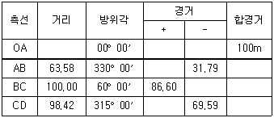
- 148.50m
- 150.76m
- 85.22m
- 80.32m
(정답률: 알수없음)
24. 각측정 결과 방위각이 0°혹은 180°에 가까울 때 각측정 오차가 위거 및 경거에 미치는 영향에 대한 설명으로 옳은 것은?
- 경거에 미치는 영향이 크다.
- 위거에 미치는 영향이 크다.
- 위거와 경거에 미치는 영향은 같다.
- 영향이 없다.
(정답률: 알수없음)
25. 최소 제곱법의 원리를 이용하여 처리할 수 있는 오차는?
- 정오차
- 부정오차
- 착오
- 물리적오차
(정답률: 알수없음)
26. 범세계적 위치결정체계(GPS)에 대한 설명중 옳지 않은 것은?
- 기상에 관계없이 위치결정이 가능하다.
- NNSS의 발전형으로 관측소요시간 및 정확도를 향상시킨 체계이다.
- 우주 부분, 제어 부분, 사용자 부분으로 구성되어있다.
- 사용되는 좌표계는 WGS72이다.
(정답률: 알수없음)
27. 교호수준측량의 결과가 다음과 같다. A점의 표고가 55.423m일 때 B점의 표고는? (단, a1=2.665m, a2=0.530m, b1=3.965m, b2=1.116m)
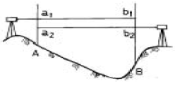
- 52.930m
- 54.480m
- 56.366m
- 57.916m
(정답률: 알수없음)
28. 한 기선장을 4구간으로 나누어 각각 독립적으로 측정하여 다음과 같은 값을 얻었다.
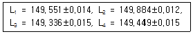
전장 L=L1+L2+L3+L4 = 598.220m일 때 전장에 대한 표준오차는 얼마인가?- ±0.060m
- ±0.⑤6m
- ±0.014m
- ±0.028m
(정답률: 알수없음)
29. 사진측량의 특수3점이 아닌 것은?
- 표정점
- 주점
- 연직점
- 등각점
(정답률: 알수없음)
30. 다음 열거한 등고선의 성질 중 틀린 것은?
- 등고선은 도면 내,외에서 반드시 폐합한다.
- 최대 경사방향은 등고선과 직각방향으로 교차한다.
- 등고선은 급경사지에서는 간격이 넓어지며, 완경사지에서는 간격이 좁아진다.
- 등고선이 도면내에서 폐합하는 경우 산정이나 분지를 나타낸다.
(정답률: 알수없음)
31. 국제 UTM 좌표의 적용범위는?
- 북위 42° ~ 남위 40°
- 북위 62° ~ 남위 60°
- 북위 70° ~ 남위 70°
- 북위 84° ~ 남위 80°
(정답률: 알수없음)
32. 삼각측량에서 내각을 600에 가깝도록 정하는 것을 원칙으로 하는 이유로 가장 타당한 것은?
- 시각적으로 보기 좋게 배열하기 위하여
- 각 점이 잘 보이도록 하기 위하여
- 측각의 오차가 변장에 미치는 영향을 최소화하기 위하여
- 선점 작업의 효율성을 위하여
(정답률: 알수없음)
33. 곡선 설치에서 교각이 32°15′이고 곡선반경이 500m일 때 곡선시점의 추가거리가 315.45m이면 곡선종점의 추가거리는 얼마인가?
- 593.88m
- 596.88m
- 623.63m
- 625.36m
(정답률: 알수없음)
34. 직접법으로 등고선을 측정하기 위하여 B점에 레벨을 세우고 표고가 75.25m인 P점에 세운 표척을 시준하여 0.85m를 측정했다. 68m인 등고선 위의 점 A를 정하려면 시준하여야 할 표척의 높이는?
- 8.1m
- 5.6m
- 6.7m
- 9.5m
(정답률: 알수없음)
35. 촬영고도 4,000m에서 종중복도 60%인 2장의 사진에서 주점기선장이 각각 102mm와 95mm였다면 비고 50m 철탑의 시차차는 얼마인가? (단, 카메라 초점거리는 15cm임)
- 1.23mm
- 1.42mm
- 2.37mm
- 2.42mm
(정답률: 알수없음)
36. 시거측량을 한 결과 협장 ℓ= 0.76m, 연직각 α= +15°를 얻었다. 이 때 고저차(H)와 수평거리(D)는 얼마인가? (단, K = 100, C = 0로 한다.)
- H = 19m, D = 70.91m
- H = 19m, D = 70.19m
- H = 21m, D = 80.91m
- H = 21m, D = 80.19m
(정답률: 알수없음)
37. 다음 표는 도로 중심선을 따라 20m 간격으로 종단측량을 실시한 결과이다. No.1의 계획고를 52m로 하고 3%의 상향 구배로 설계한다면 No.5의 성토 또는 절토고는?
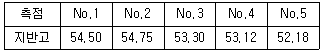
- 2.82m (성토)
- 2.22m (성토)
- 2.82m (절토)
- 2.22m (절토)
(정답률: 알수없음)
38. 직접고저측량을 하여 2km 왕복에 오차가 5mm 발생했다면 같은 정확도로 8km를 왕복측량 했을 때 오차는?
- 5mm
- 10mm
- 15mm
- 20mm
(정답률: 알수없음)
39. 삼각측량시 삼각망 조정의 세가지 조건이 아닌 것은?
- 각조건
- 측점조건
- 구과량조건
- 변조건
(정답률: 알수없음)
40. 축척 1:50000 지도상의 4cm2에 대한 지상에서의 실제면적은 얼마인가?
- 1km2
- 20km2
- 2km2
- 200km2
(정답률: 알수없음)
3과목: 응용역학
41. 재질 및 단면이 같은 다음의 2개의 외팔보에서 자유단의 처짐을 같게하는 P1/P2의 값이 바른 것은?
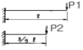
- 0.216
- 0.325
- 0.437
- 0.546
(정답률: 알수없음)
42. 지름이 4cm인 원형 강봉을 10t의 힘으로 잡아 당겼을 때 소성은 일어나지 않았고 탄성변형에 의해 길이가 1mm증가하였다. 강봉에 축척된 탄성 변형에너지는 얼마인가?
- 1.0t·mm
- 5.0t·mm
- 10.0t·mm
- 20.0t·mm
(정답률: 알수없음)
43. 다음 그림과 같은 세 힘에 대한 합력의 작용점은 O점에서 얼마의 거리에 있는가?
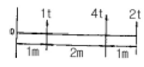
- 1m
- 2m
- 3m
- 4m
(정답률: 알수없음)
44. 다음 그림과 같은 구조물에서 사재 A의 축방향력으로 옳은 것은?
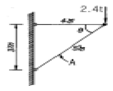
- 1.4t (인장)
- 1.9t (압축)
- 3.0t (인장)
- 4.0t (압축)
(정답률: 알수없음)
45. 그림과 같은 단주에 P=230kg의 편심하중이 작용할 때 단면에 인장력이 생기지 않기 위한 편심거리 e의 최대값은?
- 4.11cm
- 5.76cm
- 6.67cm
- 7.77cm
(정답률: 알수없음)
46. 그림과 같은 게르버보의 A점의 전단력으로 맞는 것은?
- 4t
- 6t
- 12t
- 24t
(정답률: 알수없음)
47. x축으로부터 빗금친 부분의 도형에 대한 도심까지의 거리를 구하면?
- (4/6)r
- (5/6)r
- (6/6)r
- (7/6)r
(정답률: 알수없음)
48. 그림과 같은 단순보의 중앙점에서의 처짐 y 가 옳게 된 것은?
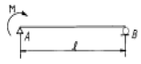
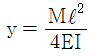
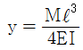
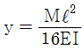
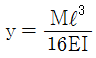
(정답률: 알수없음)
49. 길이 1m, 지름 1.5㎝의 강봉을 8t으로 당길 때 이 강봉은 얼마나 늘어나겠는가? (단, E = 2.1 × 106 kg/cm2)
- 2.2mm
- 2.6mm
- 2.8mm
- 3.1mm
(정답률: 알수없음)
50. 균질한 균일 단면봉이 그림과 같이 P1, P2, P3 의 하중을 B, C, D점에서 받고 있다. 각 구간의 거리 a=1.0m, b=0.4m, c=0.6m 이고 P2=10t, P3=5t의 하중이 작용할 때 D점에서의 수직방향 변위가 일어나지 않기 위한 하중 P1은 얼마인가?
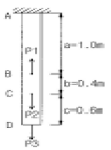
- 24t
- 20t
- 16t
- 13t
(정답률: 알수없음)
51. 그림의 구조물에서 유효강성 계수를 고려한 부재 AC의 모멘트 분배율 DFAC 는 얼마인가?
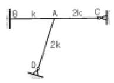
- 0.253
- 0.375
- 0.407
- 0.567
(정답률: 알수없음)
52. 트러스 해석시 가정을 설명한 것 중 틀린 것은?
- 하중으로 인한 트러스의 변형을 고려하여 부재력을 산출한다.
- 하중과 반력은 모두 트러스의 격점에만 작용한다.
- 부재의 도심축은 직선이며 연결핀의 중심을 지난다.
- 부재들은 양단에서 마찰이 없는 핀으로 연결되어 진다.
(정답률: 알수없음)
53. 다음 중 트러스의 해법이 아닌 것은?
- 격점법
- 단면법
- 도해법
- 휨응력법
(정답률: 알수없음)
54. 다음 그림의 캔틸레버에서 A점의 휨 모멘트는?
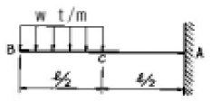
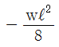
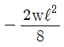
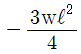
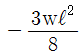
(정답률: 알수없음)
55. 기둥에 관한 다음 설명 중 가장 올바른 것은?
- 장주(long column)라 함은 길이가 긴 기둥을 말한다.
- 단주(short column)는 좌굴이 발생하기 전에 재료의 압축파괴가 먼저 일어난다.
- 동일한 단면, 길이 및 재료를 사용한 기둥은 기둥 단부의 구속조건을 다르게 하더라도 기둥의 거동특성이 달라질 수 없다.
- 편심하중이 재하된 장주의 하중-변위(p-δ) 관계에는 겹침의 원리가 적용된다.
(정답률: 알수없음)
56. 반지름 r인 원형단면에서 최대의 단면계수를 갖는 사각형의 폭과 높이의 비(b/h)로서 옳은 것은?
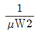
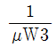
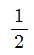
- 1
(정답률: 알수없음)
57. 그림과 같은 내민보에서 D점의 휨모멘트가 맞는 것은?
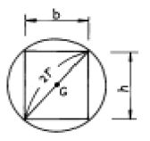
- -32t·m
- 160t·m
- 88t·m
- 40t·m
(정답률: 알수없음)
58. 다음 부정정보에서 지점B의 수직 반력은 얼마인가? (단, EI는 일정함)
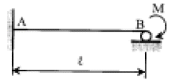
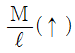
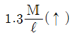
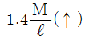
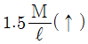
(정답률: 알수없음)
59. 그림과 같은 I형 단면에서 중립축 x에 대한 단면 2차 모멘트는?
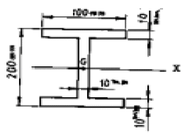
- 4374.00cm4
- 6666.67cm4
- 2292.67cm4
- 3574.76cm4
(정답률: 알수없음)
60. 다음 그림에서 지점 C의 반력이 영(零)이 되기 위해 B점에 작용시킬 집중하중의 크기는?
- 8t
- 10t
- 12t
- 14t
(정답률: 알수없음)
4과목: 건설재료 및 시공
61. 준설과 매립을 동시에 할 수 있는 준설선은?
- 그래브준설선
- 펌프준설선
- 딥퍼준설선
- 버킷준설선
(정답률: 알수없음)
62. 수직갱에 있어서 물이 고였을 때 사용하면 편리한 발파 방법은?
- 스윙컷
- 번컷
- 노컷
- 피라밋컷
(정답률: 알수없음)
63. 정통공법에서 케이슨의 수중거치 방법 중 틀린 것은?
- 축도법
- 예항식
- 비계식
- 압입식
(정답률: 알수없음)
64. 그림과 같은 유토곡선에 관한 설명 중 잘못된 것은?
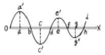
- oa', c'e' 부분은 절토 부분이다.
- 기선 ox 선상의 b,d,f,h에서는 토량의 이동이 없고 평행이다.
- 구간 ob에서는 절토량,성토량이 같다.
- 전체적으로 볼 때 성토토량이 부족하다.
(정답률: 알수없음)
65. 비빈 콘크리트를 빨리 운반해야 하는 이유로 적당하지 않은 것은?
- 재료가 분리하지 않도록
- 슬럼프값의 저하를 방지하기 위하여
- 거듭비비기의 실시를 위하여
- 공기량의 저하를 방지하기 위하여
(정답률: 알수없음)
66. 교각의 세굴 방지 공법으로 사용되지 않는 것은?
- 사석 공법
- 바닥 다짐 공법
- 돌 망태 공법
- 지보 공법
(정답률: 알수없음)
67. 기초 말뚝의 지지력 공식중 정역학적(靜力學的)지지력 산정 공식은?
- Terzaghi 공식
- Engineering News 공식
- Weisbach 공식
- Sander 공식
(정답률: 알수없음)
68. 무한궤도형 불도저 전중량이 22.95t, 접지 길이 270cm, 궤도 폭이 50cm일 때 접지압은 얼마인가?
- 0.42㎏/cm2
- 1.65㎏/cm2
- 1.25㎏/cm2
- 0.85㎏/cm2
(정답률: 알수없음)
69. 용수, 배수, 운하 등 성질이 다른 수로가 교차하지만 합류시킬 수 없을 때 또는 수로교로서는 안될 때에 사용하면 편리한 것은?
- 다공관거
- 집수거
- 사이펀관거
- 섶암거
(정답률: 알수없음)
70. 하루의 평균기온이 최대 몇 ℃이하가 되는 기상조건인 경우 한중콘크리트로 시공하여야 하는가?
- -4℃이하
- 0℃이하
- 4℃이하
- 10℃이하
(정답률: 알수없음)
71. 암석 특유의 천연적으로 갈라진 금을 무엇이라 하는가?
- 돌눈
- 석리
- 석층
- 절리
(정답률: 알수없음)
72. 다음중에서 폭발력이 가장 강하고 수중에서도 폭발할 수 있는 다이너마이트는 어느 것인가?
- 교질 다이너마이트
- 규조토 다이너마이트
- 분상 다이너마이트
- 스트레이트 다이너마이트
(정답률: 알수없음)
73. 다음 중 폭약으로 카알릿(carlit)을 사용할 수 없는 경우는 어느 것인가?
- 암석, 경질토사 절취용
- 채석장에서 큰 돌의 채취용
- 용수가 있는 터널공사의 발파용
- 갱외(坑外)의 암석절취용
(정답률: 알수없음)
74. 혼합시멘트중에서 알루미나시멘트에 관한 설명중 옳지 않은 것은?
- 해수 또는 화학작용을 받는 곳에서는 저항이 크다.
- 발열량이 대단히 많으므로 양생할 때 주의해야 한다.
- 조기강도가 작으나 장기강도는 보통포틀랜드시멘트보다 상당히 크다.
- 열분해 온도가 높으므로 내화용 콘크리트에 적합하다.
(정답률: 알수없음)
75. 수중불분리성 콘크리트용 혼화제를 사용한 콘크리트의 성질에 대한 설명 중 틀린 것은?
- 수중불분리성 혼화제를 사용한 콘크리트의 점성은 작아진다.
- 수중불분리성 혼화제를 사용한 콘크리트의 유동성은 커진다.
- 수중불분리성 혼화제를 사용한 콘크리트의 충전성은 커진다.
- 수중불분리성 혼화제를 사용한 콘크리트의 블리딩은 작아진다.
(정답률: 알수없음)
76. 다음은 굵은골재를 시험한 결과이다. 이 결과를 이용하여 굵은골재의 실적률을 구하면?
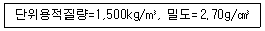
- 44.4%
- 55.6%
- 34.4%
- 65.6%
(정답률: 알수없음)
77. 다음 혼화제 중 워커빌리티 증진이나 감수작용을 기대할 수 없는 것은?
- 염화칼슘(CaCl2)
- 포졸리스(Pozzolith)
- 다렉스(Darex)
- 빈졸레진(Vinsol Resin)
(정답률: 알수없음)
78. 콘크리트용 골재의 성질 중 안정성에 대한 설명 중 틀린 것은?
- 골재의 안정성 시험은 골재를 황산나트륨 포화용액에 침수시켜 건조시키는 조작을 반복하는 방법이 있다.
- 골재 내부의 공극이 많을 수록 안정성은 떨어진다.
- 안정성이 나쁜 골재를 사용하면 콘크리트의 동결융해에 대한 저항성이 떨어진다.
- 흡수율이 큰 골재일수록 안정성이 좋은 골재이다.
(정답률: 알수없음)
79. 다음중 열경화성 수지인 것은?
- 아크릴 수지
- 폴리에틸렌 수지
- 요소수지
- 불소수지
(정답률: 알수없음)
80. 화약류의 취급이나 사용시 주의사항으로 잘못된 것은?
- 다이너마이트는 직사광선을 피하고 화기에 접근시키지 말아야 한다.
- 뇌관과 폭약은 같은 장소에 보관하여 안전에 대비한다.
- 장시간 보관시는 수분을 제거하여 동결하지 않도록 해야한다.
- 도화선을 삽입하여 뇌관에 압착할 때 충격이 가해지지 않도록 한다.
(정답률: 알수없음)
5과목: 철도보선관계법규
81. 궤도검측차 검사의 본 점검은 전 본선을 년 몇회 시행하는 것이 원칙인가?
- 1회
- 2회
- 3회
- 4회
(정답률: 알수없음)
82. 다음 중 열차 또는 차량의 운전 중에 발생한 사고로 열차 사고와 건널목사고를 의미하는 것은?
- 운전사고
- 일반 안전사고
- 책임사고
- 열차교차사고
(정답률: 알수없음)
83. 다음 중 국철에서 일반적으로 선로우측에 설치하여야 하는 것은?
- km표
- 구배표
- 관할경계표
- 곡선표
(정답률: 알수없음)
84. 1급선과 2급선에서 기울기의 차이가 최소 얼마 이상일 때 종곡선을 삽입하여야 하는가?
- 1,000분의 2
- 1,000분의 3
- 1,000분의 4
- 1,000분의 5
(정답률: 알수없음)
85. 다음은 선로경계 기준을 설명한 것이다. 옳지 않은 것은?
- 기상경보가 발령되었을 때는 제1종경계를 실시한다.
- 강풍 또는 집중적인 폭우로 재해가 예상될 때는 제1종 경계를 실시한다.
- 기상정보, 예비특보 및 기상주의보가 발령되었을 때 제3종경계를 실시한다.
- 국지적인 기상경보가 발령되었을 때는 제3종경계를 실시한다.
(정답률: 알수없음)
86. 재해우려지역의 조사사항으로 옳지 않은 것은?
- 농경지 정리 상태
- 수로 또는 하천의 변화 상태
- 지형 변경 등으로 토사 및 수목유입 우려 상태
- 깍기 및 돋기의 비탈붕괴 우려상태
(정답률: 알수없음)
87. 다음 중 선로의 부담력인 표준활하중은?
- L-22
- L-20
- L-18
- L-16
(정답률: 알수없음)
88. 레일의 끝닳음 측정량이 어느 한도를 초과하는 경우에 끝닳음 정정을 하여야 하는가? (단, 1급선 내지 3급선의 경우)
- 1mm
- 3mm
- 5mm
- 7mm
(정답률: 알수없음)
89. 탈선방지 가드레일의 부설에 대한 설명으로 옳지 않은 것은?
- 반경 300m 미만의 곡선에 부설한다.
- 후렌지웨이의 폭은 80‾100mm로 부설한다.
- 위험이 큰 쪽의 레일에 부설한다.
- 본선레일과 같은 레일을 사용한다.
(정답률: 알수없음)
90. 다음중 국유철도에서 3급선에서 R=400m 구간을 계획할 때 취할 수 있는 최대 기울기는?
- 15°
- 16.75°
- 13.2°
- 12.5°
(정답률: 알수없음)
91. 철도를 횡단하는 시설물이 설치되는 구간의 건축한계의 높이는 7,010mm이상 확보하도록 규정하고 있는 이유로 옳은 것은?
- 터널에 저촉하지 않기 위해서
- 교량구조물에 저촉하지 않기 위하여
- 전차선의 가설높이에 지장이 없도록 하기 위해서
- 장래 복선화를 위하여 여유분을 확보하기 위해서
(정답률: 알수없음)
92. 다음 중 용어의 정의가 옳지 않은 것은?
- 궤간: 레일의 윗면으로부터 14mm 아래지점에서 양쪽 레일 안쪽간의 가장 짧은 거리
- 수평: 한쪽 레일의 레일 길이 방향에 대한 레일면의 고저차
- 줄맞춤: 궤간 측정선에 있어서의 레일 길이 방향의 좌우 굴곡차
- 부본선: 정차장내에 있어 주본선 이외의 본선로
(정답률: 알수없음)
93. 긴급복구작업을 시행한 구간을 최초로 통과하는 열차는 최대 얼마의 속도로 운행하여야 하는가?
- 10km/h
- 20km/h
- 30km/h
- 40km/h
(정답률: 알수없음)
94. 선로정비에 쓰이는 팩킹(packing)의 종류가 아닌 것은?
- 세로 패킹
- 가로 패킹
- 수직 패킹
- 건너 패킹
(정답률: 알수없음)
95. PC침목을 쌓을 수 있는 최대 높이와 단과 단 사이에 놓는 각재의 규격으로 옳은 것은?
- 5단, 50mm×50mm
- 10단, 50mm×50mm
- 15단, 75mm×75mm
- 15단, 100mm×100mm
(정답률: 알수없음)
96. 국유철도건설규칙에 따른 슬랙에 관한 설명으로 옳지 않은 것은?
- 반경 600m 이하인 곡선구간의 궤도에는 반드시 두어야 한다.
- 슬랙은 최대 20mm를 초과하여서는 안된다.
- 완화곡선에서 슬랙은 완화곡선 전체의 길이로 체감하여야 한다.
- 완화곡선이 없는 경우에는 캔트의 체감길이와 같은 길이로 체감하여야 한다.
(정답률: 알수없음)
97. 트로리를 모터카로 견인운전하는 경우의 속도에 대한 제한으로 옳지 않은 것은?
- 제동장치가 있는 10톤 트로리를 견인운전하는 경우 30km/h이하
- 제동장치가 없는 10톤 트로리를 견인운전하는 경우 40km/h이하
- 제동장치가 없는 5톤 트로리를 견인운전하는 경우 30km/h이하
- 제동장치가 없는 장대레일 트로리를 견인운전하는 경우 25km/h이하
(정답률: 알수없음)
98. 다음 중 철도건널목 신설시 충족조건에 관한 설명으로 틀린 것은?
- 인접 건널목과의 거리는 1,000m 이상으로 한다.
- 건널목 최소폭은 3m 이상으로 한다.
- 철도선로와 접속도로의 교차각은 45도 이상으로 한다.
- 열차투시거리는 열차속도 100km/h 이상일 때 500m 이상 확보하여야 한다.
(정답률: 알수없음)
99. 국유철도에서 기관차용 전차대 길이의 기준으로 옳은 것은?
- 17m이상
- 23m이상
- 27m이상
- 32m이상
(정답률: 알수없음)
100. 국유철도건설규칙에서 기관차의 축중은 정차중에 있을 때 최대 몇 톤 이하이어야 하는가?
- 15톤
- 20톤
- 22톤
- 25톤
(정답률: 알수없음)